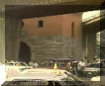

呂清夫 撰文

漢民族似乎有一種空地恐懼症，一有空地就想蓋房子，而且常常要蓋遠東最大的房子，蓋來蓋去，把台北蓋成了國外媒體所謂的「醜陋之都」。不知是不是我們的祖先常在兵荒馬亂之中，沒有住過好的房子，還是房子常常付之一炬，因之，累積下一種集體潛意識，使大家以蓋房子為樂，動輒大興土木，連大學校園都不例外，有人說，這是一種「阿房宮情結」。日前，台北爆發了京華開發案，與不久前的榮星案相互輝映，也與七號公園的體育館案異曲同工。因為它們都想蓋出巨無霸的建築，都要消滅綠地的空間，以便吸引大批的人潮，使台北的交通更擁擠、空氣更污濁、地震更沒有地方跑，而十分要命的是，經土木專家的評估，台北現有的建築多的是危樓！ 一個城市能否留下一些綠地，在在考驗著市民的智慧。像紐約那樣的水泥叢林之中，居然能夠留下中央公園那片廣闊的森林（三四○公頃），在今天看來，實在有點奇蹟。事實上中央公園的出現，不知經過多少人的聲嘶吶喊，例如一八五一年的紐約市長選舉中，便有人以新設中央公園為訴求，並由此訴求而登上了市長寶座。那時候，一些著名的作家，也都是新公園的催生者，例如「美國文學之父」W•歐文便是箇中的名人。他在當時建議政府，把中央公園（見右圖）那片土地買下來，純粹作為公園用地，這才為後人在滾滾紅塵中留下一片綠地。這個作家的提倡公園不是沒有緣由的，因為他是鄉土的熱愛者，他曾多次上溯哈德遜河旅行，寫過「紐約的故事」，從紐約市的傳說及荷蘭人的探險開始，一路寫下來，充滿詼諧與詩趣。時至今日，紐約著名公園已不知凡幾，公園總面積已達一五○平方公里，相當於曼哈頓區的兩倍！不過，公園綠地最多的城市應數倫敦，它不但擁有著名的海德公園，它還有數百處花園廣場和幾百個公園，到處充滿綠意，野生植物更多達兩千餘種。只是這麼多的綠地也不是天上掉下來的，因為地上到處都有炒地皮的投機商人，千方百計要在綠地上蓋房子。碰到這種情況，倫敦市民莫不鳴鼓而攻，並發生過多次的武裝抗爭或械鬥，甚至演變成流血事件，在倫敦史上，為保衛綠地而戰的記載真是斑斑可考。而為了享受更多的綠地，在二十世紀初，倫敦近郊更有兩個「花園城」出現，每個城的人口都限制在三萬人以下。法國評論家M•哈貢在其「我們明天住哪�堙v一書中曾說：「對明日的都市而言，最大的敵人與障礙，就是不動產投機……，都市土地的私有對於都市的發展，乃是一大挑戰，因為它與都市的一切合理發展是對立的。在過去，我們曾自社會中去保護個人，並一直作過高貴的努力，但是同時，我們也不要忘了，要從個人手中去保護社會。在瑞士，土地使用確定為九十九年，在英國，一九五三年的『國土計畫法』規定，帝國內一切土地的剩餘價值必須繳回，只有這樣才能防止土地投機的一切可能性。」
一個城市能否留下一些綠地，在在考驗著市民的智慧。像紐約那樣的水泥叢林之中，居然能夠留下中央公園那片廣闊的森林（三四○公頃），在今天看來，實在有點奇蹟。事實上中央公園的出現，不知經過多少人的聲嘶吶喊，例如一八五一年的紐約市長選舉中，便有人以新設中央公園為訴求，並由此訴求而登上了市長寶座。那時候，一些著名的作家，也都是新公園的催生者，例如「美國文學之父」W•歐文便是箇中的名人。他在當時建議政府，把中央公園（見右圖）那片土地買下來，純粹作為公園用地，這才為後人在滾滾紅塵中留下一片綠地。這個作家的提倡公園不是沒有緣由的，因為他是鄉土的熱愛者，他曾多次上溯哈德遜河旅行，寫過「紐約的故事」，從紐約市的傳說及荷蘭人的探險開始，一路寫下來，充滿詼諧與詩趣。時至今日，紐約著名公園已不知凡幾，公園總面積已達一五○平方公里，相當於曼哈頓區的兩倍！不過，公園綠地最多的城市應數倫敦，它不但擁有著名的海德公園，它還有數百處花園廣場和幾百個公園，到處充滿綠意，野生植物更多達兩千餘種。只是這麼多的綠地也不是天上掉下來的，因為地上到處都有炒地皮的投機商人，千方百計要在綠地上蓋房子。碰到這種情況，倫敦市民莫不鳴鼓而攻，並發生過多次的武裝抗爭或械鬥，甚至演變成流血事件，在倫敦史上，為保衛綠地而戰的記載真是斑斑可考。而為了享受更多的綠地，在二十世紀初，倫敦近郊更有兩個「花園城」出現，每個城的人口都限制在三萬人以下。法國評論家M•哈貢在其「我們明天住哪�堙v一書中曾說：「對明日的都市而言，最大的敵人與障礙，就是不動產投機……，都市土地的私有對於都市的發展，乃是一大挑戰，因為它與都市的一切合理發展是對立的。在過去，我們曾自社會中去保護個人，並一直作過高貴的努力，但是同時，我們也不要忘了，要從個人手中去保護社會。在瑞士，土地使用確定為九十九年，在英國，一九五三年的『國土計畫法』規定，帝國內一切土地的剩餘價值必須繳回，只有這樣才能防止土地投機的一切可能性。」
我不知道這種看法對我們有沒有參考價值，但是對於「阿房宮情結」，我們的教育似乎應該提供一點道家的看法。老子曾說，虛比實更有用，「無」比有更實用，他曾比喻說，輪子中央有洞才能承受輪軸，杯子當中挖空才能裝水，房子內有空間，才能住人，物體真正有用的部分，反而是它虛空的部分。（三十幅共一轂，當其無，有車之用。挺填以為器，當其無，有器之用。鑿戶牖以為室，當其無，有室之用」）這對於我們今天看重房子甚於綠地，把文化建設視同文化建築的心態來說，無異是一記棒喝，水泥叢林的都市不但今人透不過氣，也毫無美感可言，老子的看法不但是哲學的教訓，也是美學的教條！
原載1991.2.11.自立早報